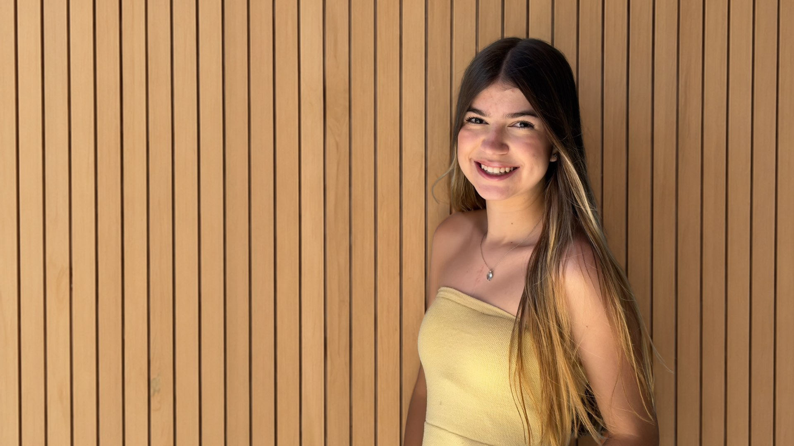
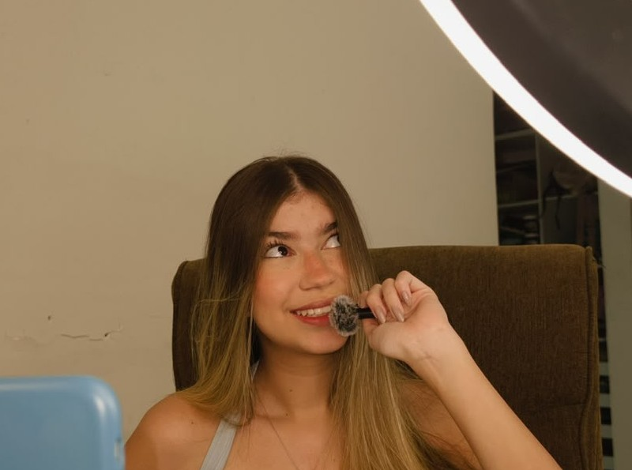

tenho 20 anos, criadora de conteúdo. Sempre fui apaixonada pelo audiovisual e meu olhar está em transformar produtos em experiências reais. Por isso, antes de criar qualquer conteúdo, penso em como uma marca pode se conectar às pessoas de forma natural, e que se conecte com a minha rotina e com a minha audiência. Hoje trabalho com marcas de diferentes nichos, desenvolvendo conteúdos estratégicos, autênticos e pensados para gerar identificação e resultados, que vende para a Gen Z.


